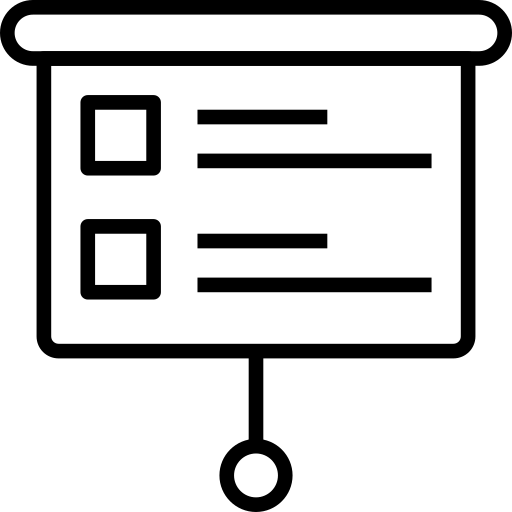
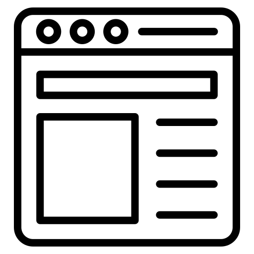

Thème de recherche
Je travaille sur la modélisation mathématique, la simulation et la réduction d'ordre de flux occulaires et de leurs interactions. Les modèles sont simulés à l'aide de la librairie Feel++ [1], à laquelle je participe au développement.

Exposés scientifiques
Présentations orales
- 23 août 2023 : CEMRACS 2023, avec Paguiel Javan Hossie et Lucas Perrin : Estimation of interactions in microbial communities via a neural network-based generalized smoothing algorithm 
- 15 juin 2023 : Séminaire doctorant de l'IRMA : Réduction de modèles et analyse de sensibilité appliqué à un modèle biophysique dans l'œil humain
- 28 February 2023 : Siam Conference on Computational Science and Engineering (CSE23), in Amsterdam : Model Order Reduction for Complex Ocular Simulations Inside the Human Eyeball (abstract)
- 1er décembre 2022 : Séminaire Jeunes Chercheurs, au Laboratoire Mathématiques de Reims : Modèles de réduction d’ordre des simulations oculaires complexes dans l’œil humain
- 9 décembre 2021 : Séminaire doctorant de l'IRMA : Construction de jeux de tuiles apériodiques sur grille hexagonale
Poster dans des congrès
- CANUM 2020, 13 juin 2022 et JMBS 2022, 3 - 7 octobre 2022 : Model order reduction for complex ocular simulations inside the human eyeball
 , update :
, update :
Stages et mémoires
-
2021 Stage de seconde année au Master CSMI : Méthode de réduction d'ordre pour un modèle poreux-élastique et couplage avec un système d'équations différentielles ordinaires, sous la direction de Christophe Prud'homme.
-
2020 Stage de première année au Master CSMI : Modélisation et simulation hygrothermique, sous la direction de Vincent Chabannes, Zohra Djatouti, Romain Hild & Christophe Prud'homme. 
-
2019 Stage du Magistère : Méthodes de construction de jeux de tuiles apériodiques sur grilles hexagonales, sous la direction de Martin Delacourt et Nicolas Ollinger.
-
2018 Mémoire du Magistère : Automates cellulaires, sous la direction de Michel Coornaert.
Références
[1] Feel++ V111.0-alpha.3 
Légende :  PDF, Présentation, Page web
PDF, Présentation, Page web